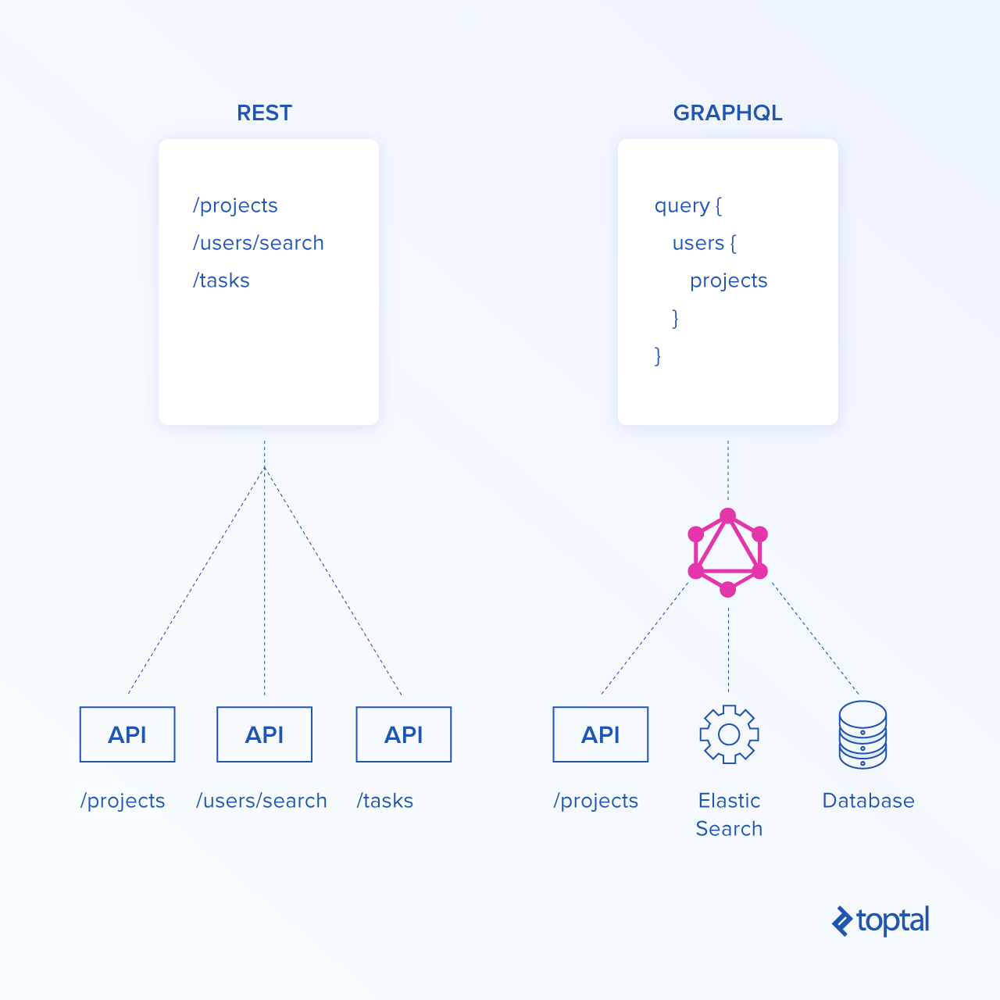

GraphQL은 API를 위한 쿼리 언어 입니다.
query {
account(id: "1") {
username
email
firstName
lastName
friends {
firstName
username
}
}
}
Graphql vs restapi
git clone https://github.com/spring-guides/gs-accessing-data-mysql.gitdocker run -d \
--name spring-jpa-test \
-e MYSQL_ROOT_PASSWORD=root \
-e MYSQL_DATABASE=db_example \
-e MYSQL_USER=springuser \
-e MYSQL_PASSWORD=ThePassword \
-p 3306:3306 \
mariadb:latest \
--character-set-server=utf8mb4 --collation-server=utf8mb4_unicode_cispring.jpa.hibernate.ddl-auto=update
io.leangen.graphql
spqr
0.9.9
@Entity // This tells Hibernate to make a table out of this class
public class User {
@Id
@GeneratedValue(strategy=GenerationType.AUTO)
@GraphQLQuery(name = "id", description = "A user's id")
private Integer id;
@GraphQLQuery(name = "name", description = "A user's name")
private String name;
@GraphQLQuery(name = "email", description = "A user's email")
private String email;
@Lob
@GraphQLQuery(name = "comment", description = "user massage")
private String comment;
@Temporal(TemporalType.TIMESTAMP)
private Date create_time;
public Integer getId() {
return id;
}
public void setId(Integer id) {
this.id = id;
}
public String getName() {
return name;
}
public void setName(String name) {
this.name = name;
}
public String getEmail() {
return email;
}
public void setEmail(String email) {
this.email = email;
}
public String getComment() {
return comment;
}
public void setComment(String comment) {
this.comment = comment;
}
public Date getCreate_time() {
return create_time;
}
public void setCreate_time(Date create_time) {
this.create_time = create_time;
}
}
@Service
public class MainService {
private final UserRepository userRepository;
public MainService(UserRepository userRepository) {
this.userRepository = userRepository;
}
@GraphQLQuery(name = "users")
public List getUsers() {
return (List)userRepository.findAll();
}
@GraphQLQuery(name = "user")
public Optional getUserById(@GraphQLArgument(name = "id") Integer id) {
return userRepository.findById(id);
}
@GraphQLMutation(name = "saveUser")
public User saveUser(@GraphQLArgument(name = "user") User user) {
return userRepository.save(user);
}
@GraphQLMutation(name = "deleteUser")
public void deleteUser(@GraphQLArgument(name = "id") Integer id) {
userRepository.deleteById(id);
}
}
@RestController
public class MainController {
private final GraphQL graphQL;
public MainController (MainService mainService) {
GraphQLSchema schema = new GraphQLSchemaGenerator()
.withResolverBuilders(
new AnnotatedResolverBuilder())
.withOperationsFromSingleton(mainService)
.withValueMapperFactory(new JacksonValueMapperFactory())
.generate();
graphQL = GraphQL.newGraphQL(schema).build();
}
@PostMapping(value = "/graphql", consumes = MediaType.APPLICATION_JSON_UTF8_VALUE, produces = MediaType.APPLICATION_JSON_UTF8_VALUE)
@ResponseBody
public Map graphql(@RequestBody Map request, HttpServletRequest raw) {
ExecutionResult executionResult = graphQL.execute(ExecutionInput.newExecutionInput()
.query(request.get("query"))
.operationName(request.get("operationName"))
.context(raw)
.build());
return executionResult.toSpecification();
}
} cd gs-accessing-data-mysql
mvn spring-boot:run
wget https://raw.githubusercontent.com/gadian88/graphql-test/master/generatedata.sql
cat generatedata.sql | docker exec -i spring-jpa-test /usr/bin/mysql -u root --password=root db_example
public interface UserRepository extends CrudRepository {
Page findAll(Pageable pageable);
}
@GraphQLQuery(name = "users")
public List getUsers(
@GraphQLArgument(name = "page") Integer page,
@GraphQLArgument(name = "size") Integer size
) {
return userRepository.findAll(PageRequest.of(page, size, Sort.by("id"))).getContent();
}
Full text index는 full text serach를 위한 index입니다.
기존의 텍스트 검색
SELECT * FROM user WHERE comment LIKE '%test%'BUT 이런식으로 쿼리를 만들어 사용한다고 하면 모든 행의 문자열을 검색하기 때문에 시간이 오래 걸립니다.
그럼 ElasticSearch 을 쓰죠
하지만 소규모로 서비스를 한다면?
FULLTEXT 검색 방식
자연어 검색(natural search)
검색 문자열을 단어 단위로 분리한 후, 해당 단어 중 하나라도 포함되는 행을 찾는다.불린 모드 검색(boolean mode search)
검색 문자열을 단어 단위로 분리한 후, 해당 단어가 포함되는 행을 찾는 규칙을 추가적으로 적용하여 해당 규칙에 매칭되는 행을 찾는다.mysql 에서 간단하게 Full Text Index 을 설정할수 있습니다.
ALTER TABLE user ADD FULLTEXT(comment);이젠 설정이 끝났으니 자연어 검색을 합니다.
SELECT
name, email, comment , match(comment) against(' 그들의 관현악이며') as score
FROME db_example.user
WHERE match(comment) against(' 그들의 관현악이며');불린 모드 검색(boolean mode search) 이란?
한번 불린 모드 검색을 해봅시다.
SELECT
name, email, comment
FROME db_example.user
WHERE match(comment) against(' "그들의 관현악이며" -test' in boolean mode);